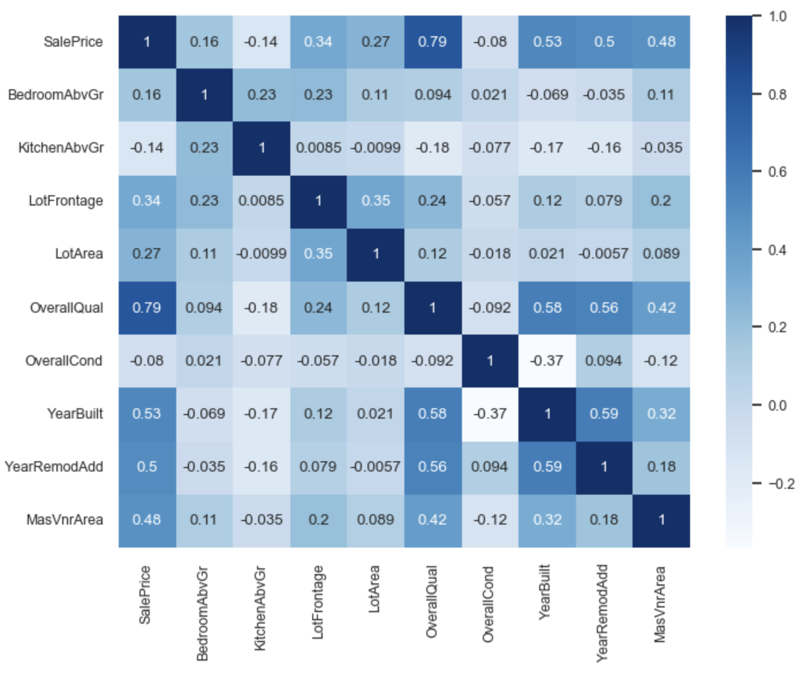
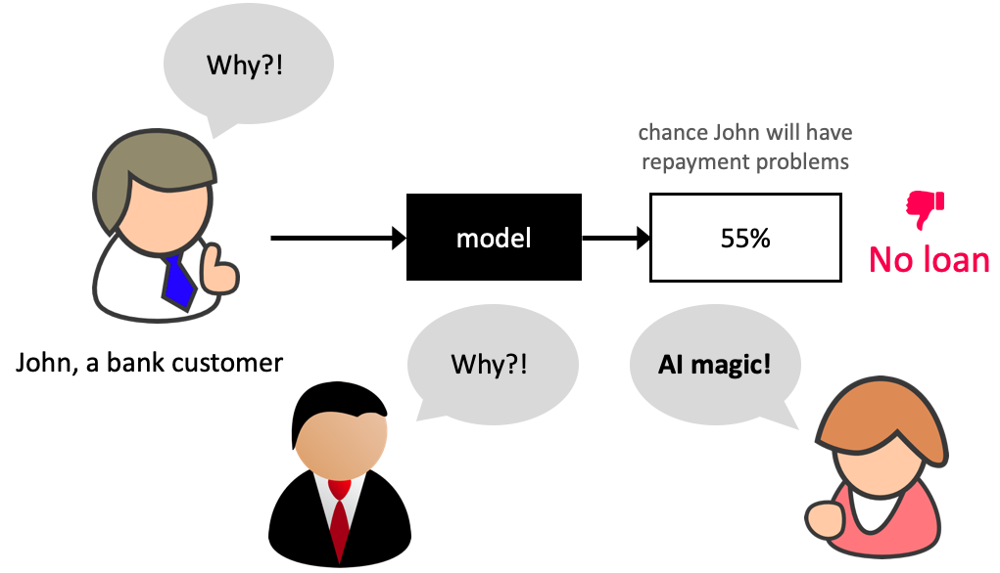
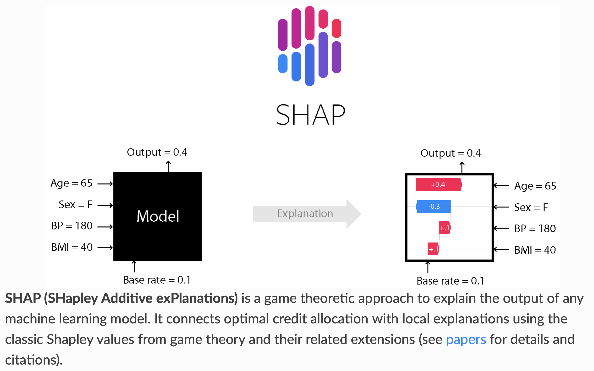

CPSC 330 Lecture 12: Feature importances
Scenario 1: Which model would you pick
Predicting whether a patient is likely to develop diabetes based on features such as age, blood pressure, glucose levels, and BMI. You have two models:
- LGBM which results in 0.9 f1 score
- Logistic regression which results in 0.84 f1 score
Which model would you pick? Why?
Scenario 2
Predicting whether a user will purchase a product next based on their browsing history, previous purchases, and click behavior. You have two models:
- LGBM which results in 0.9 F1 score
- Logistic regression which results in 0.84 F1 score
Which model would you pick? Why?
Transparency
- In many domains understanding the relationship between features and predictions is critical for trust and regulatory compliance.
Feature importances
- How does the output depend upon the input?
- How do the predictions change as a function of a particular feature?
How to get feature importances?
Correlations

- What are some limitations of correlations?
Interpreting coefficients
- Linear models are interpretable because you get coefficients associated with different features.
- Each coefficient represents the estimated impact of a feature on the target variable, assuming all other features are held constant.
- In a
Ridgemodel,- A positive coefficient indicates that as the feature’s value increases, the predicted value also increases.
- A negative coefficient indicates that an increase in the feature’s value leads to a decrease in the predicted value.
- A positive coefficient indicates that as the feature’s value increases, the predicted value also increases.
Interpreting coefficients
- When we have different types of preprocessed features, what challenges you might face in interpreting them?
- Ordinally encoded features
- One-hot encoded features
- Scaled numeric features
Pause and Reflect
We are now just over half-way through CPSC 330!
You had a midterm already a couple of weeks ago, I’d like some feedback on how things are going in class (as the instructor).
Class Survey
I’d love to hear how you think lectures are going, and how the course is going overall: bit.ly/cpsc330_25S.
(iClicker) Midterm poll
Select all of the following statements which are TRUE.
- I’m happy with my progress and learning in this course.
- I find the course content interesting, but the pace is a bit overwhelming. Balancing this course with other responsibilities is challenging
- I’m doing okay, but I feel stressed and worried about upcoming assessments.
- I’m confused about some concepts and would appreciate more clarification or review sessions.
- I’m struggling to keep up with the material. I am not happy with my learning in this course and my morale is low ☹️.
Break
Let’s take a break!

Group Work: Class Demo & Live Coding (if time permits)
For this demo, each student should click this link to create a new repo in their accounts, then clone that repo locally to follow along with the demo from today.
SHAP
SHAP
You might need to install SHAP in your conda environment
conda install -c conda-forge shap